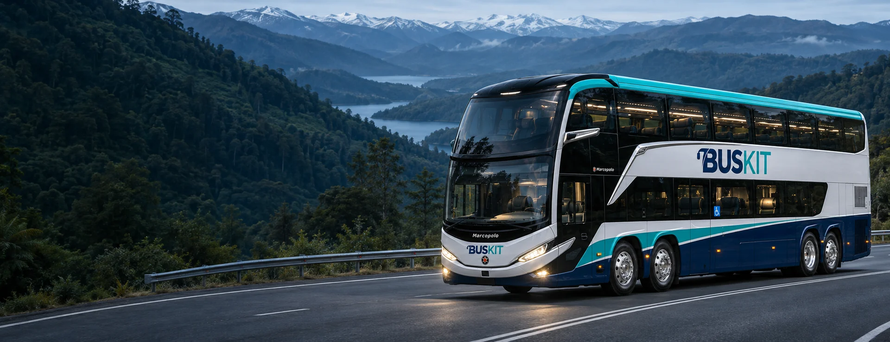

Control de flota y seguimiento
Tráfico programa las salidas, asigna buses y tripulaciones y consulta la ubicación de los vehículos en ruta. La agencia puede informar al pasajero dónde va su bus.

Programa cada salida con su bus y tripulación. Consulta las ventas por tramo y controla la recaudación de tus agencias y de cada bus.
BUSKIT vincula cada venta con su servicio, su tramo y la caja que recibió el pago. Así puedes revisar cuánto vendió la agencia y cuánto recaudó la tripulación durante el viaje.
 BK-0830-09
BK-0830-09Adaptamos los sistemas al trabajo de tus equipos de tráfico, boletería y administración, desde la programación de los buses hasta las condiciones que pactas con tus clientes.
Tráfico programa las salidas, asigna buses y tripulaciones y consulta la ubicación de los vehículos en ruta. La agencia puede informar al pasajero dónde va su bus.
Una plaza vendida de Puerto Montt a Temuco puede volver a venderse de Temuco a Santiago. Boletería consulta la disponibilidad según dónde sube y baja cada pasajero.
El operador puede habilitar un portal privado para que una empresa gestione los pasajes de su personal. Las condiciones de venta se adaptan a lo acordado con cada cliente.
La agencia de origen registra los bultos que recibe. Las agencias consultan el estado del envío y la oficina de destino registra la entrega.
Las API de BUSKIT conectan a tu empresa con recorrido.cl y kupos.cl para que los pasajeros puedan comprar tus servicios en ambas plataformas.
Desde 2007 desarrollamos software para empresas de buses en Chile. Trabajamos junto a sus equipos de tráfico, agencia y administración para adaptar los sistemas a la forma de operar de cada empresa.
También somos partner de implementación de Odoo para proyectos de gestión empresarial.
Cuéntanos cómo operan tus buses y agencias. Coordinaremos una demostración para tu equipo.